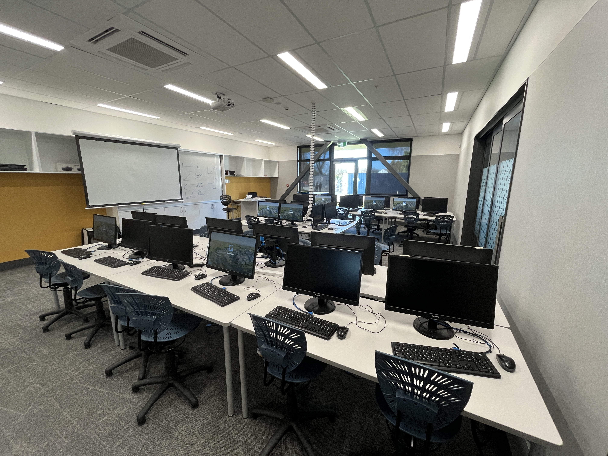
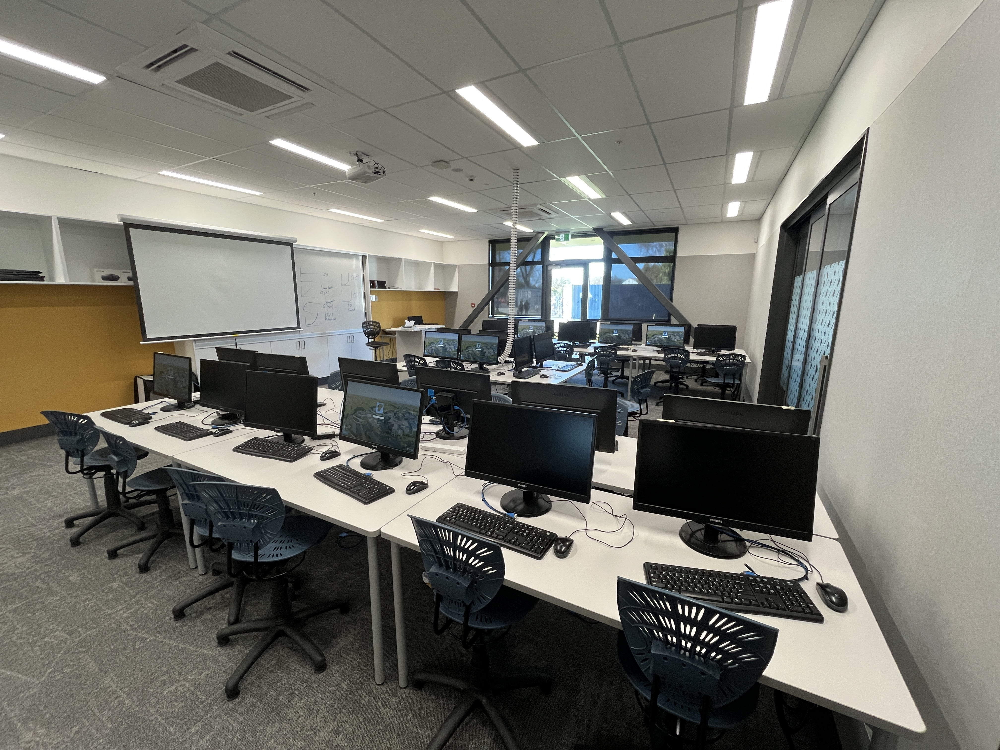
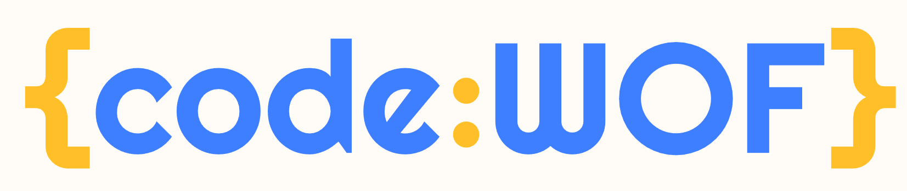

Programming Club
Who we are?
We are a group of people who are interested in coding. For beginners we will start from learning basic python. For people who already know programming we will practise on past problems from NZIC, NZPC or any past programming competition.
Want to join us?
 

Come along at Pukehinau 14 every Friday lunchtime!
Teacher in charge
Mr. Rodkiss
rds@burnside.school.nz
Club history
Our club has a rich history of success in programming competitions. Last year, we proudly took home the championship title at the Canterbury School Programming Contest. Moreover, we've consistently ranked among the top six in numerous other contests, showcasing our dedication and expertise in coding.
Level in Programming
Beginner
code:WOF
codeWOF is a free website developed by the University of Canterbury Computer Science Education Research Group in partnership with DTTA to enable teachers and students in New Zealand to practice and maintain their programming skills (your coding warrant of fitness).
Grok Academy
Grok Academy is your home for Digital Technologies education offering classroom-ready online and unplugged resources. Drawing on decades of experience in teaching digital technologies, we provide support through teaching resources, professional learning, and curriculum guidance. As an Australian charity, we aim to empower the next generation with the skills, knowledge, and dispositions they need to become the creators of tomorrow.
Intermediate to Advance
NZOI
NZOI is the New Zealand Olympiad in Informatics, one of a number of Secondary School Olympiads operating under the umbrella organisation known as, NZ Science Olympiads.
Prog4fun
This site aims to support various recreational programming activities, most notably the Programming Contest Problem Archive (PCPA), a collection of programming contest problems from NZPC, ICPC and ANZAC contests, run using CodeRunner.
Timeline
- Organise groups and teams
- Training + practising programming
- NZIC round 1
- Canterbury School Programming Contest
- NZIC round 2
- NZPC
- NZIC round 3
Contest
NZIC
The NZIC online programming contest series, run by the New Zealand Olympiad in Informatics. There will be 3 rounds. In each round, students choose a time during the week of that round to solve a selection of programming problems. The difficulty ranges from entry-level implementation problems to more challenging algorithmic problems.
Canterbury Schools Programming Contest
The Canterbury Schools Programming Contest is an annual competition held at the University of Canterbury, where teams of high school students participate in solving algorithmic problems using programming languages like Python and C++. Each team, usually consisting of three members, works collaboratively to complete as many tasks as possible within a time limit, typically three hours.
NZPC
The NZPC is an annual contest, usually held in August or September, and open to all programmers in New Zealand. Teams from outside New Zealand may usually enter the SPAR contest (formerly the ANZAC League) which runs at the same time and uses the same problem set.
Burnside High School 2024 Results!
In 2024, our school proudly took First place in the Canterbury Schools Programming Contest and New Zealand Programming Contest (NZPC).

Related link
Programming In School
Visit Burnside High School Digital Technologies Website!
Year 10
Choose 10DGT - Year 10 Digital Technologies
Year 11
Choose 11DTP - Year 11 Digital Technologies - Software Engineering and Computer Science
Choose 11DTG - Year 11 Digital Technologies - Game Design
Year 12
Choose 12DTP - Year 12 Digital Technologies - Software Engineering and Computer Science
Choose 12DTG - Year 12 Digital Technologies - Game Design
Year 13
Choose 13DTP- Year 13 Digital Technologies - Software Engineering and Computer Science
Choose 13DTG - Year 13 Digital Technologies - Game Design
© 2024 Burnside High School by Nitkamon Sirawattanakul